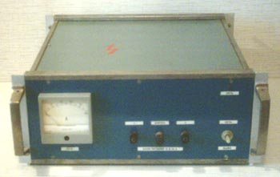
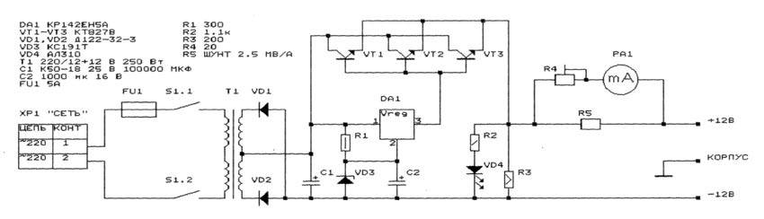
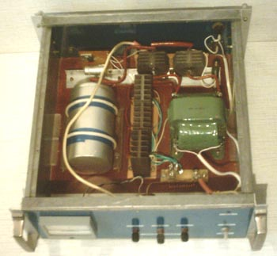

Источник питания повышенной мощности напряжением 12.6 В (замена аккумуляторной батареи)

Источник питания напряжением 12.6 В при выходном токе до 50 А предназначен для замены аккумуляторной батареи при проведении испытаний автомобильной электроники, питания приборов, для которых необходима бортовая сеть автомобиля, налаживания и ремонта преобразователей напряжения =12/~220 В, проведения опытов, в которых требуется источник низкого (10 ... 14 В) напряжения при большом потребляемом токе, а также для питания низкоомных электромагнитов [3]. Отличается простотой конструкции и эксплуатации.
Технические данные:
Описание:
Схема источника питания показана на рис. 1. За основу взята конструкция мощного выпрямителя с выходным напряжением 12 В [1].

Рис. 1. Схема электрическая принципиальная источника питания повышенной мощности напряжением 12.6 В.
Первичная обмотка трансформатора T1 запитывается от сети переменного тока напряжением 220 В частотой 50 Гц через предохранитель FU1 и тумблер S1. Со вторичной обмотки напряжение подается на двухполупериодный выпрямитель VD1VD2 (Д122-32-3) и фильтр C1. Для стабилизации выходного напряжения служат транзисторные ключи VT1 - VT3 (КТ827В), включенные параллельно в режиме параметрического стабилизатора. Источником опорного напряжения служит микросхема DA1 (КР142ЕН5А), работающая совместно со стабилитроном VD3 (КС191Т). Стабилизированное напряжение поступает на выходные клеммы источника питания. Для контроля выходного тока служит миллиамперметр PA1, подключенный через балластный резистор R4 к шунту R5. Светодиод VD4 служит индикатором включения источника питания.
Источник питания смонтирован в металлическом корпусе. Вид на внутренний монтаж показан на рис. 2. Большинство деталей установлено на текстолитовом основании. Устройства подключения, управления и индикации выведены на переднюю и заднюю панель.

Рис. 2. Внутренний вид источника питания.
Состояние разработки:
Источник питания повышенной мощности используется в лабораторных условиях для проведения различных экспериментов, при налаживании и ремонте устройств, которым для питания требуется бортовая сеть автомобиля, в технологических целях [2], а также при проведении опытов с электромагнитами [3].
Ссылки:
27.01.2004
19.06.2010
06.11.2010
03.07.2018
Альтернативные источники
энергии
Компьютеры и
Интернет
Магнитные поля
Механотронные системы
Перспективные
разработки
Электроника и технология